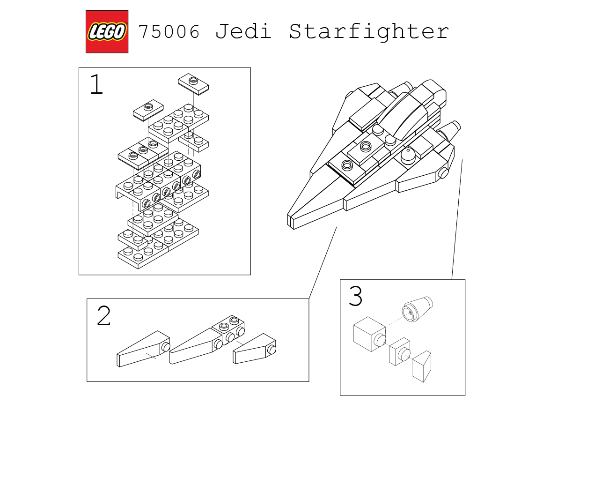
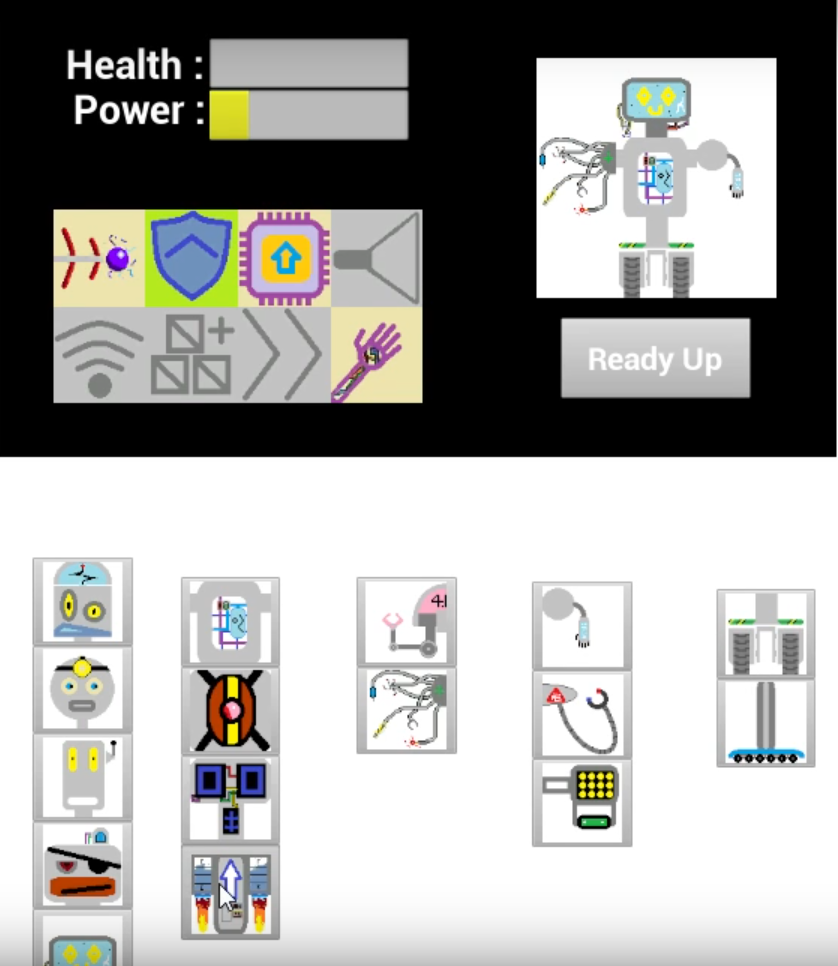
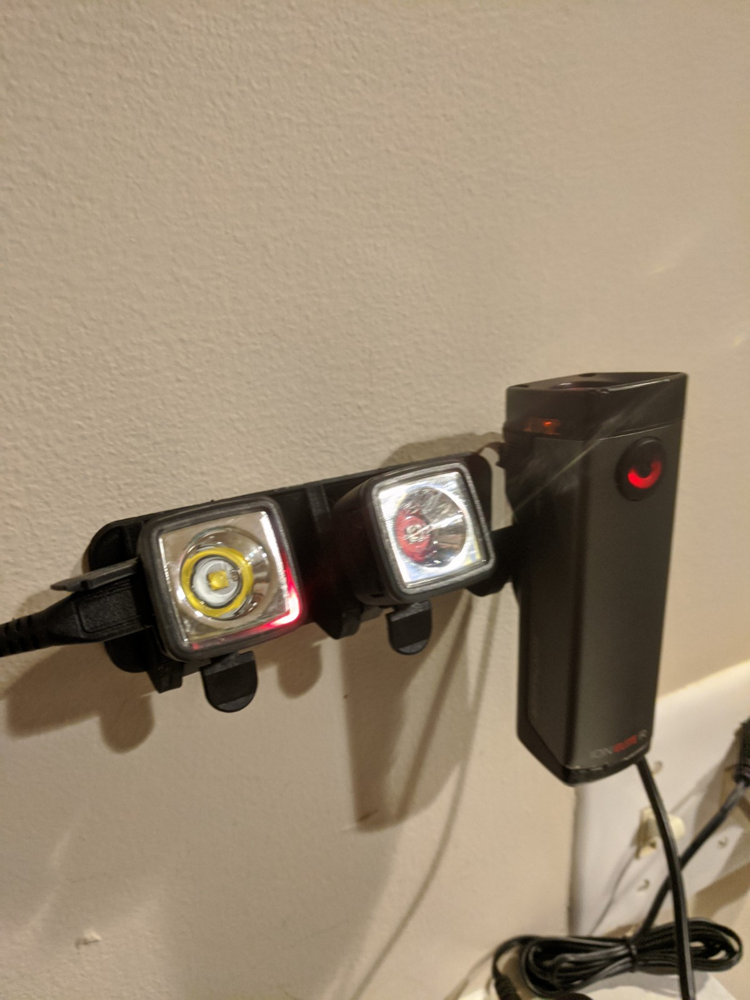

Pick and place robotic arm.
Positions can be controlled by a person or automated.
Click the image for build instructions and code.

Art Project Using Fusion 360
Turn based adventure game prototype, developed using Unreal Engine.

Zero waste bicycle light mounts.

Zero waste bicycle light mounts.
My local bike shop has a ton of small plastic parts for use with Bontrager lights.
I 3D printed a mount that could turn this future trash into a mounted charging station.
Click the image to download the .STL
Custom cake topper & succulent planter for a friends wedding.

reShape PlasticWorks
I founded this startup with a singlular goal - less waste, more plants. To date I've recycled just over 3kg of polypropeline and PLA into planters.
I've since teamed up with The Innovation Barn in Charlotte to further this goal. Click the image for more plant pictures!